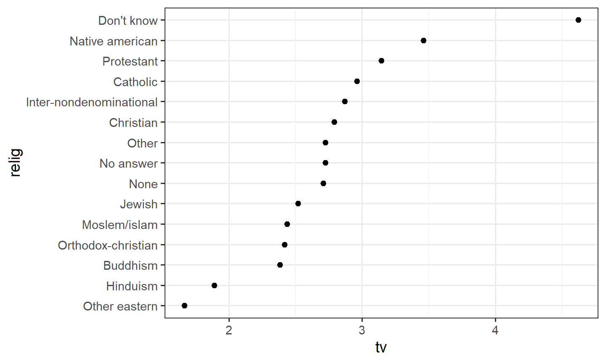

10.1 forcats: Factors
A factor is an integer plus labels. Reorder, recode, collapse, and drop levels.
1. A factor is an integer plus labels
A factor stores a categorical vector as integer codes plus a
levels attribute. What prints is the label. What sits
underneath is 1, 2, 3, … in the
order of the levels.
A useful longer read: McNamara and Horton, Wrangling Categorical Data in R.
That is why as.numeric() on a factor of numbers is the
index, not the printed value.
library(tidyverse)
xf <- factor(c(10, 11, 13, 10))
xf## [1] 10 11 13 10
## Levels: 10 11 13as.numeric(xf)## [1] 1 2 3 1parse_number(as.character(xf))## [1] 10 11 13 10parse_number(levels(xf)[xf])## [1] 10 11 13 10as.character() (or levels(xf)[xf]) gets the
labels back. parse_number() turns them into numbers.
Create a factor with factor(). Set levels
yourself when the order is not alphabetical.
month_levels <- c("Jan", "Feb", "Mar", "Apr", "May", "Jun",
"Jul", "Aug", "Sep", "Oct", "Nov", "Dec")
factor(c("Dec", "Apr", "Jan", "Mar"), levels = month_levels)## [1] Dec Apr Jan Mar
## Levels: Jan Feb Mar Apr May Jun Jul Aug Sep Oct Nov DecValues that are not in levels become NA.
Extra levels stay in the attribute even if no row uses them.
2. gss_cat
gss_cat is a General Social Survey slice that ships with
forcats. ?gss_cat. Useful factors: marital,
rincome, partyid, relig.
gss_cat## # A tibble: 21,483 × 9
## year marital age race rincome partyid relig denom tvhours
## <int> <fct> <int> <fct> <fct> <fct> <fct> <fct> <int>
## 1 2000 Never married 26 White $8000 to 9999 Ind,near … Prot… Sout… 12
## 2 2000 Divorced 48 White $8000 to 9999 Not str r… Prot… Bapt… NA
## 3 2000 Widowed 67 White Not applicable Independe… Prot… No d… 2
## 4 2000 Never married 39 White Not applicable Ind,near … Orth… Not … 4
## 5 2000 Divorced 25 White Not applicable Not str d… None Not … 1
## 6 2000 Married 25 White $20000 - 24999 Strong de… Prot… Sout… NA
## 7 2000 Never married 36 White $25000 or more Not str r… Chri… Not … 3
## 8 2000 Divorced 44 White $7000 to 7999 Ind,near … Prot… Luth… NA
## 9 2000 Married 44 White $25000 or more Not str d… Prot… Other 0
## 10 2000 Married 47 White $25000 or more Strong re… Prot… Sout… 3
## # ℹ 21,473 more rowscount(gss_cat, partyid)## # A tibble: 10 × 2
## partyid n
## <fct> <int>
## 1 No answer 154
## 2 Don't know 1
## 3 Other party 393
## 4 Strong republican 2314
## 5 Not str republican 3032
## 6 Ind,near rep 1791
## 7 Independent 4119
## 8 Ind,near dem 2499
## 9 Not str democrat 3690
## 10 Strong democrat 3490forcats comes with library(tidyverse).
Every helper starts with fct_.
3. Reorder levels
Plots follow the level order. Change the order, not the data.
fct_reorder(f, x)— orderfby a summary ofx(median by default). The usual choice for a scatter or bar of a summary.fct_infreq(f)— most common level first.fct_rev(f)— reverse the current levels.fct_relevel(f, ...)— move named levels to the front (or pass a function).
gss_cat |>
group_by(relig) |>
summarize(tv = mean(tvhours, na.rm = TRUE), n = n()) |>
mutate(relig = fct_reorder(relig, tv)) |>
ggplot(aes(x = tv, y = relig)) +
geom_point() +
theme_bw()
gss_cat |>
mutate(partyid = fct_relevel(partyid, "Independent")) |>
count(partyid)## # A tibble: 10 × 2
## partyid n
## <fct> <int>
## 1 Independent 4119
## 2 No answer 154
## 3 Don't know 1
## 4 Other party 393
## 5 Strong republican 2314
## 6 Not str republican 3032
## 7 Ind,near rep 1791
## 8 Ind,near dem 2499
## 9 Not str democrat 3690
## 10 Strong democrat 3490fct_infreq() then fct_rev() puts the most
common level on the right of a bar chart.
4. Recode, collapse, lump
fct_recode() renames levels. Old name on the right. Drop
a level with NULL = "old".
gss_cat |>
mutate(partyid = fct_recode(
partyid,
"Rep, strong" = "Strong republican",
"Rep, weak" = "Not str republican",
"Dem, weak" = "Not str democrat",
"Dem, strong" = "Strong democrat"
)) |>
count(partyid)## # A tibble: 10 × 2
## partyid n
## <fct> <int>
## 1 No answer 154
## 2 Don't know 1
## 3 Other party 393
## 4 Rep, strong 2314
## 5 Rep, weak 3032
## 6 Ind,near rep 1791
## 7 Independent 4119
## 8 Ind,near dem 2499
## 9 Dem, weak 3690
## 10 Dem, strong 3490fct_collapse() is recode for many-to-one.
fct_lump() folds rare levels into Other.
n keeps the most common; prop keeps levels
above a share.
gss_cat |>
mutate(partyid = fct_collapse(
partyid,
other = c("No answer", "Don't know", "Other party"),
rep = c("Strong republican", "Not str republican"),
ind = c("Ind,near rep", "Independent", "Ind,near dem"),
dem = c("Not str democrat", "Strong democrat")
)) |>
count(partyid)## # A tibble: 4 × 2
## partyid n
## <fct> <int>
## 1 other 548
## 2 rep 5346
## 3 ind 8409
## 4 dem 7180gss_cat |>
mutate(relig = fct_lump(relig, n = 5)) |>
count(relig)## # A tibble: 6 × 2
## relig n
## <fct> <int>
## 1 Christian 689
## 2 None 3523
## 3 Jewish 388
## 4 Catholic 5124
## 5 Protestant 10846
## 6 Other 9135. Add, drop, and missing levels
f <- factor(c("A", "B", "A"), levels = c("A", "B", "C"))
fct_drop(f)## [1] A B A
## Levels: A Bg <- factor(c("A", "B"))
fct_expand(g, "C", "D")## [1] A B
## Levels: A B C Dh <- factor(c("A", NA, "B"))
fct_explicit_na(h, na_level = "(Missing)")## [1] A (Missing) B
## Levels: A B (Missing)fct_drop() removes unused levels.
fct_expand() adds empty ones.
fct_explicit_na() turns NA into a real level
so it appears in tables and plots. Filtering out rows does
not drop the level; call fct_drop()
after.
6. Practice
Use gss_cat.
- Reorder
partyidalphabetically. - Move
rincomelevel"Not applicable"to the front. - Abbreviate
maritalwithfct_recode().